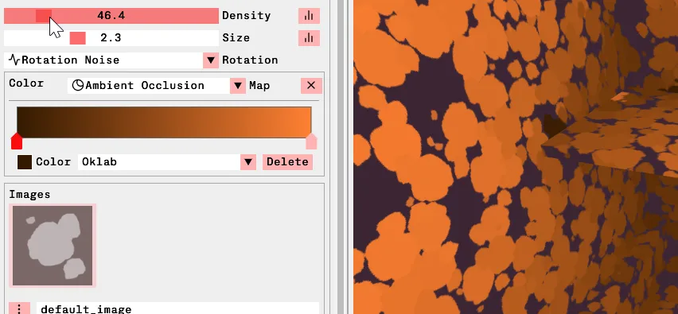

A bunch of random things I learned while trying to make an art tool
Style Bake
This is style bake a tool I've been working on for the past couple months
for making textures like this
Certainly not practical but I feel like it's a good base to learn a bunch
of stuff and experiment
Random
yuck, like i can barely look at it
Poisson Disk, Blue Noise Etc
compared to these points that evenly cover the space
no points are too close together, or too far apart
Dart throwing
So obviously we want this nice distribution of points and
one of the easiest way to go about generating this is just to pick a random point
and if it's too close to any existing points remove it then repeat.
Other Ideas
- Can't pregenerate because the density needs to be variable
Could possibly split it into multiple chunks and run on seperate threads and then do a merge pass
but then when would the merging be done after the chunks are finished?
And that's what that looks like
It's not horrible, but it's certainly not ideal either
Dart throwing starts fast, but gets exponentially slower
Speeds always great but if you can't get something done in a single frame
(and if it's user controlled then it will be longer than a frame)
then you need to take into consideration how your algorithm looks as it develops
For this type of application
I prefer something that iteratively approaches a final result rather than something that
it's more important that you can approximate the final placement as quickly as possible
I would vastly prefer this over something else
even if this took longer
I'm always gonna vastly prefer something like this even if it were takes longer to reach full coverage
There's different

And that's what it looks like now definitly not perfect
theres absolutely work I could do in optimizing my spatial acceleration structures but
far more usable
As the density is changed, rotation is also affected like those points in the middle are
clearly in the same spot visually and yet
(def lazy-fib
(concat
[0 1]
((fn rfib [a b]
(lazy-cons (+ a b) (rfib b (+ a b)))) 0 1)))
And this happens because I implemented it in the simplest way where
I reset all the points any time the density is modified,
I actually inadvertenly solved this by making the rotation but you could imagine
some more complicated system
Game Design
Another thing I was surprised by was just how many parralels I found between
the thinking involved in software design and games
i guess it shouldn't be surprising
For example
One of my favourite ideas from game design is this idea of coverage of the space,
meaning like you've set the boundaries of what your game or tool or ___ can do and
everything should have some interaction with everything else
even if not particularly useful or the result is weird
it's your job to still cover that part of the design space
or otherwise it can feel incomplete
So to give a more real example since that was probably a little abstract,
early on the controls looked like this.
Maximal expressiveness from the most minimal set of controls
So in some way
Like in games where your searching for
I guess in some sense you can determine the beauty of your software by
Early on I was like oh I'll add a different type of map that is direction values and then you can paint
like a flow map and then that will determine the orientation of the decals.
But then it's like
Often it costs nothing or very little to be more open with how it operates
and I guess the counter argument to all this would be well your adding extra options that don't really make sense
Bonus Technical Stuff
Heres a bunch of quickfire, mostly technical stuff that would have saved me time had I known it before
Debugging pixels
Towards the end of the initial prototype I put in proper controls for the texture viewport just
because I thought it would be nice to have when painting but it actually ended up being super useful
for debugging aswell especially so after I added a little overlay to show the value of the hovered pixel
which isn't show in the gif.
it would have saved me so much time when intitially working on the ao generation stuff to inspect weird
1 pixel seams or ensure values are in a specific range.
Debugging pixels
But actually recently I found this which is the bitmap view rule in the raddebugger which lets you specify
a size and pixel format for a variable and then it'll go and render a preview that updates as i
step through. So i've almost completley switched to using this for things
I still haven't worked out a way to see the specific values for each pixel but I'm sure theres a way
of turning that on aswell
Strict about color spaces
While this didn't neccesarily save me much time on this project, it certainly got me thinking much more about what
color space something was
Probably not worth the effort if your a pro,
Gradients!
https://raphlinus.github.io/color/2021/01/18/oklab-critique.html
On the subject of color, GRADIENTS!
heres a bunch of different color spaces
on the top is and on the bottom is
It quickly devolves into the craziest diagrams and terms you've ever seen
Gradients Are Easy
function Color lrgb_to_oklab(Color lrgb) {
const float l = 0.4122214708f * lrgb.x + 0.5363325363f * lrgb.y + 0.0514459929f * lrgb.z;
const float m = 0.2119034982f * lrgb.x + 0.6806995451f * lrgb.y + 0.1073969566f * lrgb.z;
const float s = 0.0883024619f * lrgb.x + 0.2817188376f * lrgb.y + 0.6299787005f * lrgb.z;
const float l_ = cbrtf( l );
const float m_ = cbrtf( m );
const float s_ = cbrtf( s );
return {
0.2104542553f * l_ + 0.7936177850f * m_ - 0.0040720468f * s_,
1.9779984951f * l_ - 2.4285922050f * m_ + 0.4505937099f * s_,
0.0259040371f * l_ + 0.7827717662f * m_ - 0.8086757660f * s_,
lrgb.a
};
}
function Color oklab_to_lrgb(Color oklab) {
const float l_ = oklab.x + 0.3963377774f * oklab.y + 0.2158037573f * oklab.z;
const float m_ = oklab.x - 0.1055613458f * oklab.y - 0.0638541728f * oklab.z;
const float s_ = oklab.x - 0.0894841775f * oklab.y - 1.2914855480f * oklab.z;
const float l = l_ * l_ * l_;
const float m = m_ * m_ * m_;
const float s = s_ * s_ * s_;
return {
+4.0767416621f * l - 3.3077115913f * m + 0.2309699292f * s,
-1.2684380046f * l + 2.6097574011f * m - 0.3413193965f * s,
-0.0041960863f * l - 0.7034186147f * m + 1.7076147010f * s,
oklab.a
};
}
https://bottosson.github.io/posts/oklab/
It's like 40 lines at most, just copy it in and move on
but at minimum if your making a creative software with gradients
you have no excuse to not atleast support hsv and some perceptual color space other than srgb
there's more advanced shit for sure, if you really want to get into it
but
Decal Rendering?
The uv seams are still clearly visible and thats
So here's my open question to end it on, I'm not really sure how to render the decals.
In this type of software currently I'm just drawing a bunch of quad instances in a seperate
pass onto a render target that is then used to texture the mesh
Deferred?
Classic Decals
http://blog.wolfire.com/2009/06/how-to-project-decals/
Where you generate a set of triangles, by clipping the mesh from a viewpoint and then using the triangles and uvs from
that viewpoint to render a mesh with the decal texture.
and this would actually work because I assume you could just take the calculated triangles and convert
them back to the uv space of the original mesh but doing this for 100k+ decals that I would ideally like to be
able to modify each frame seems like pushing it, maybe this wouldn't be as big of an issue if they were often only
clipping a single triangle but it still feels like there has to be a more direct way.
Other techniques
https://www.inf.usi.ch/hormann/papers/Scharfig.2010.HA3.pdf
So I went looking,
Which might be the right direction however
and I could definitly be reading it wrong,
but often only seem to handle cases where your projecting one texture at at a time
which obviously wouldn't work if you had to loop through and do that same process 100 thousand times.


 Sometype of deferred screenspace solution wether in a
fully deferred or forward+ pipeline
but either way the problem
it's not an accurate representation of what the final texture will look Like.
it will look better than it should
Sometype of deferred screenspace solution wether in a
fully deferred or forward+ pipeline
but either way the problem
it's not an accurate representation of what the final texture will look Like.
it will look better than it should